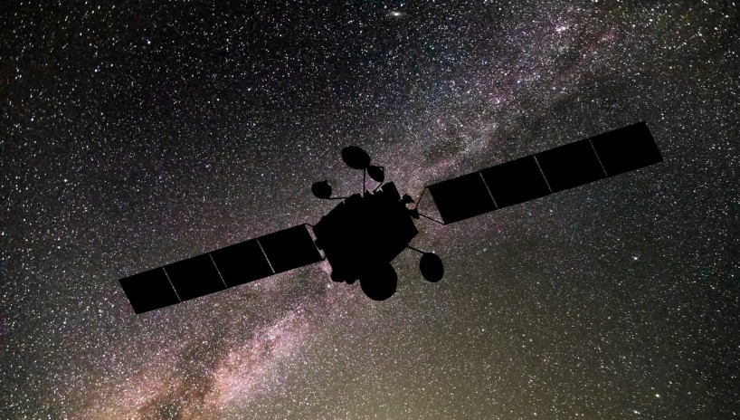

Hogyan kutatjuk a világűrt?

Az űrkutatás segítségével egyre többet tudunk meg a világűrről. A tudósok műholdakat, űrszondákat és űrtávcsöveket használnak az égitestek megfigyelésére. Az űrhajósok pedig különböző kísérleteket végeznek az űrállomásokon.
Az űrkutatás fontos eszközei
- Rakéták – az űreszközök elindítására
- Műholdak – kommunikációra és megfigyelésre
- Űrszondák – más égitestek vizsgálatára
- Űrtávcsövek – távoli objektumok megfigyelésére
- Űrállomások – tudományos kísérletek végzésére